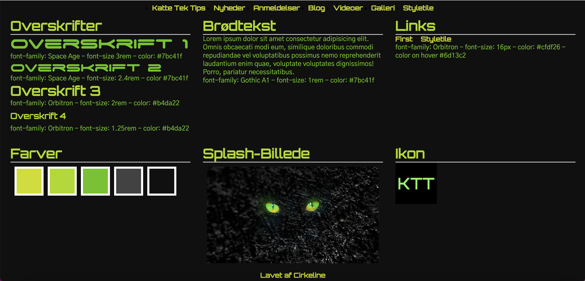
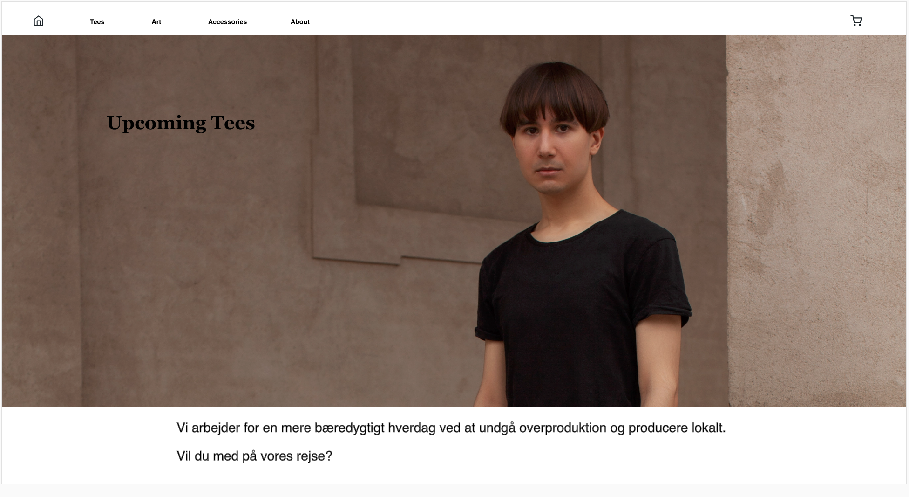

Tema 02 - Grundlæggende web
I tema 02 blev vi introduceret til HTML og CSS hvor vi fik en grundlæggende forståelse og kompetencer til at lave et responsivt site med den viden vi fik indenfor kode. På design delen blev vi introduceret til kompositioner, layout principper, fonte og hvordan man arbejder med forskelige designprocesser.
Tema 03 - grundlæggende UX
I tema 03 skulle vi lave en hifi prototype i XD af en webshop, hvor vi selv skulle producere indhold, layout, copy og microcopy. Udover dette blev vi introduceret til forskelige måder at lave desk research blandt andet surveys, interviews af personer og gennem artikler/statistikker. Som afslutning skulle vi pitche vores prototype og fik feedback.
